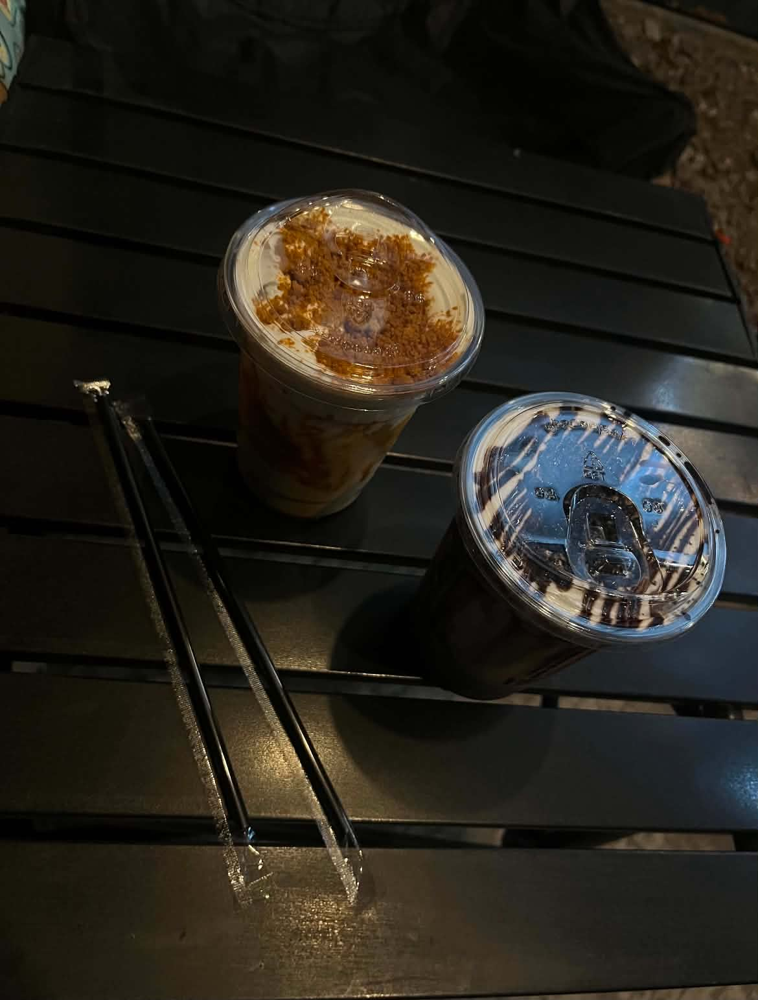

8 Balli'n Cafe

About 8 Balli'n Cafe
8 Balli'n Cafe is a cozy and budget-friendly spot in Santa Ana, Manila. It is a great place to relax, enjoy a refreshing drink, and spend quality time with friends in a laid-back and welcoming environment.
I recommend 8 Balli'n Cafe because it offers more than just drinks. Visitors can challenge their friends to a game of 8-ball pool while enjoying a casual hangout. Whether you want to take a break, meet up with friends, or simply have fun playing pool, this cafe is a great neighborhood destination.
Place Details
| Address | 2231 Revillin, Santa Ana, Manila, Metro Manila |
|---|---|
| Type | Cafe and Pool Hangout Spot |
| Price Range | ₱100-₱150 |
| Best Time to Visit | Afternoon or evening with friends |